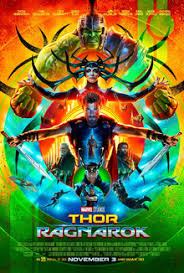

"It's time for me to be who I am, rather than who I'm supposed to be."
―Thor to Valkyrie[src]
Thor Odinson is the Asgardian God of Thunder, the former king of Asgard and New Asgard, and a founding member of the Avengers. When his irresponsible and impetuous behavior reignited a conflict between Asgard and Jotunheim,
Thor was denied the right to become king, stripped of his power, and banished to Earth by Odin. While exiled on Earth,
Thor learned humility, finding love with Jane Foster, and helped save his new friends from the Destroyer sent by Loki. Due to his
selfless act of sacrifice, Thor redeemed himself in his father's eyes and was granted his power once more, which he
then used to defeat Loki's schemes of genocide.
Upon being welcomed back to Asgard as a hero, Thor was forced to return to Earth in order to retrieve Loki after he had survived to fall through a black hole and had begun his attempt at world domination,
having taken possession of the Tesseract. Thor joined the Avengers under the guidance of S.H.I.E.L.D. and stood with them to stop
the schemes of his own adopted brother, eventually following the newly formed team as they battled against Loki's army of the
Chitauri during the Battle of New York until Loki was eventually defeated by the Avengers, captured and returned
onto Asgard to await justice for his crimes against Earth.
Thor returned to Asgard having defeated his brother's schemes, as he then helped the Asgardian Armies restore peace across all of the Nine Realms during the War of the Nine Realms.
However, the peace proved to be short-lived as Thor then fought the Dark Elves during the Second Dark Elf Conflict as they had attempted
to plunge the Nine Realms into eternal darkness. During these events, Thor was reunited with Jane Foster who had become host to the Aether and a
target of the Dark Elves, with Thor being forced to free Loki from imprisonment for his aid. Eventually, the Aether was removed
from Foster's body and Loki seemingly sacrificed Thor from Kurse, leading to the Dark Elves and Malekith's defeat.
Thor renounced his claim to the throne and left Asgard for Earth so he could stay with Foster.
During his stay on Earth, Thor helped the Avengers once again, this time in their attempts to locate Loki's Scepter. This also lead to him joining the fight against HYDRA. Following HYDRA's defeat and the
capture of Baron Wolfgang von Strucker, the team had to stop the newly created Ultron, a rogue invention inadvertently created
by Tony Stark which had threatened to wipe out all of humanity and replace it with its own Ultron Sentries. Once Ultron had been defeated,
Thor promised his Avengers allies that he would return and went back to Asgard to investigate the visions he saw when
being manipulated by Scarlet Witch of the Infinity Stones. In his investigations, Thor also discovered that
Loki was still alive and had usurped Odin's royal throne during Thor's absence.
To aid in both pursuing his brother and finding his father to return peace to Asgard, Thor sought help from Doctor Strange. However, Thor was just too late to save his own father from death.
Shortly afterwards, Thor met Hela, the Goddess of Death and his sister. In the wake of his first encounter with Hela, Thor's hammer Mjølnir was destroyed
and he was banished to Sakaar, where he was forced to compete in the Contest of Champions. After a reunion
and subsequent fight with Hulk, the pair allied with the rogue Valkyrie in order to save Asgard and escape Sakaar. After battling with Hela and losing an eye to her, Thor then had Loki unleash Ragnarök and destroy Asgard, killing Hela in the process, although he escaped
with the remaining Asgardians. Declaring that Asgard was all its people and not a place, Thor accepted his
newfound position as kin and decided to relocate the Asgardians on Earth.
As they were en route to Earth, their ship was attacked by Thanos and the Black Order, who sought the Tesseract which Loki took from Asgard's vault at the last moment.
Thor witnessed Thanos take the stone and murder his brother before he was flung from the ship and left for dead. He was rescued by the Guardians
of the Galaxy and had teamed up with Rocket Raccoon and Groot to travel to Nidavellir. With the help of Eitri,
Thor crafted Stormbreaker and aided the nation of Wakanda and the Avengers in defeating the Outriders and confronting Thanos. However,
Thor squandered his chance to kill Thanos with his new weapon and Thanos activated the completed Infinity Gauntlet and
erased half the universe's population from existence before he escaped. After the Avengers were joined by Captain Marvel, the team
traveled to the Garden, where Thor and the Avengers ambushed and interrogated Thanos, discovering that the Titan destroyed
the Stones, ensuring that a reversal of his actions was now impossible. Enraged, Thor beheaded Thanos using Stormbreaker and left the planet.
Following Thanos' death, Thor left the Avengers and relocated to Tønsberg, Norway, where he and the surviving Asgardians resettled, renaming the town New Asgard.
Five years later, Hulk and Rocket traveled to New Asgard to convince the now-overweight and depressed Thor to rejoin the team after discovering how
to travel through time. Thor joined the Avengers on their Time Heist and participated in the Battle of Earth, where he fought Thanos
again alongside Captain America and Iron Man, the latter sacrificing his life to eliminate Thanos and his armies. After
attending Stark's funeral, Thor decided to go with the Guardians of the Galaxy, proclaiming Valkyrie to succeed him as the new ruler of the Asgardians.